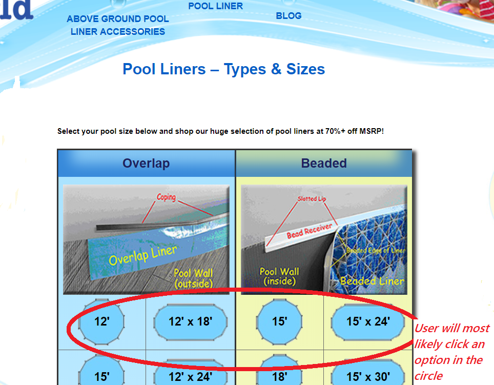

Exploring the topic of usability, I am going to follow Steve Krug's classic text on the subject: Don't Make Me Think Revisited. (The original is the "more classic" version. Krug highlights some of the behavioral patterns of users. Krug discusses four key concepts of website usability , Clarity, Real User Behavior, Billboard Design, Word Omission.
The tools used to complete the analysis include Krugs principles of website usability, components the Usability Test posted on Usability.gov and a website for analysis, Liner World ( www.linerworld.com). The purpose of Linerworld is to sell pool liners, accesories and information to buyers on how use nd select the products on the website. The analysis is based on four usability criterion in chapter one of the book.
1. Clarity: Don’t make me think “As far as is humanly possible, when I look at a web page it should be self-evident. Obvious. Self –Explanatory.
2. Real User Behavior: People Scan, Satifice and Muddle Through: Understanding the difference between our perception of how people use our product and the reality.
3. Billboard Design: Design for scanning not reading. As makers, were thinking “great literature”. While the Users reality is much closer to “billboard going at 60 miles an hour.”
4. Omit Needless Words: Get Rid of half the words on each page, then get rid of half of whats left.
Website Introduction
Linerworld.com is a commercial website selling swimming pool liners, pool accessories and supplies for above the ground pools. Users can purchase products, get additional information on common pool liner questions and review how-to guides on pool products.
Metrics and Evaluation
Each of the four usability principles have the ability to earn 1 point. The criteria used for evaluation are as follows:
1.Clarity Clickability test: Is it obvious to user what’s clickable? During the purchasing process is website navigation product self-evident.
Self Evident: meaning there’s no guesswork in completing a purchase.
2.Real User Behavior:By simply scanning the page can users scan the page easily identify information.
3.Billboard Design:Are the most important aspects of the webpage clear, based on effective use of visual hierarchy, page breaks,and effective copy format?
4.Word Omission: Are there unnecessary words on the page, is the most useful information prominent, is the page clearly organized.
Results and Recommendations for Each Criterion of the Usability Principles
Arngen.net was evaluated on four criterion. Each criterion has the potential to score 3 total points per criteria to yield a maximum score of 12. Argen.net received a score of 3/12.
Overall, what is working for the Liner World website? The strengths of the page are its clickability and clarity. The page provides the user with many ways to start the transaction process. The wesbite is designed to provide users with as many ways as possible to start the purchasing process of a product. You can click on any of the headers and objects on the page to start making a purchase. The website purpose is supported by the images, colors, and link headers.If it looks like you can click on it, you can which is why clarity and clickability scored the strongest.
What isnt working for the site, or what improvements can stregthen usability? The website design and development feutures requireing improvement are word omission. The page has too much text making the page "loud". Many of the links lead to the same page and have similar categories that can be given a single header and turned into drop down boxes. Giving the more white space to increase its readability.
Usability Results:
Clarity:6/7
Real User Behavior:4.5/7
Billboard Design: 5.5/7
Word Omission: 4.5/7
Evaluation of Pages for Transaction Completion
Starting the Transaction

Clarity score 1/1:
The user has to think about where to start the purchasing process due to the number of options available on the home page.
The options to start the purchasing process are in the center-top navigation, left and right side of the page and the center page image.
Though it isnt self evident where to start the purhasing process, the user has to the option to click on just about everything on the home page.
The website designer made almost all the links a starting point for a purhase.
Real User Behavior 1/1:
The page has some easily identifiable information.
Billboard Design .5/1:
The page could benefit from better visual hierarchy by improving headers, drops down menus, and categorizing the page content.
Word Omission .5/1:
Links to make a purchase and content on the left side of the page should have a category in the navigation at the top of the page in a drop down box.
After selecting "order a pool liner" link as a starting point. The user is taken to a page to select a pool liner based on type and size.

Clarity1/1:
After clicking the Order Pool Liners link in the header, the user moves to next step in the transaction and has the option to select from a variety of pool liners.
There are a number of options for users to click, as a result the page is deemed clickable.
Intuitively users will most likely select a pool liner based on the size of the pool as indicated in the red circle because the pool liner options based on pool size take up the majority of the page.
Its evident users can continue the purchase transaction by selecting a liners based pool size.
The user has to have some previous knowledge of liner types of to continue the purchasing process.
If the user clicks the image under the overlap and beaded header,additional information about pool liners is provided allowing the users to make an informed choice on how to select the liner needed.
Real User Behavior .5/1:
The purchasing information is easily identifiable. Clicking on the images lead to FAQ information that in the overlap and beaded images .
The suggestion for improvement includes have the FAQ information listed with the title and header
Billboard Design .5/1:
The visual hierarchy, content, and copy in the photos aren’t effective.
Word Omission.5/1:
The directions at the top of the page aren’t necessary
Once the user selects the type and size of liner needed, she is taken to a product review page
- Clarity.5/1 Again, the user is presented with from option to select from to move the transaction process forward. There are many options to click, The User has the option to select the view details button, blue bolded description title, the photo and the 82% MSRP. It’s not as evident which item to click to go to the next step of the transaction however, each link moves to the next purchasing transaction. The view details button would be more effective under the photo.
- Real User Behavior .5/1 The information on the page is somewhat identifiable. Removing the content on the side of the page while making the purchase, moving the description under the product name, and removing the 82% MSRP closer to the product name would improve the identifiability.
- Billboard design .5/1 The photo, product description and purchase relationship is evident. Removing the 12” round overlap pool liners and enlarging the product name could increase the effectiveness of the visual hierarchy.
- Word Omission 0/1 The product description, copy under the product name and view details button require improvement. The third page isn’t necessary in the purchasing process and can be removed.
When the user clicks the 12" Overlap Pool Liner Great Barrier Reef link the item is added to thier cart. The user is given an opportunity to view purchase details, continue shopping, or proceed to check out.
- Clarity 1/1 The checkout page to complete the purchase is self-evident, self-explanatory and clickable.
- Real User Behavior 1/1 The User can easily scan the page to complete the steps in the purchasing process.
- Billboard Design 1/1 The visual hierarchy is effective, the text image and bold titles are effective in communicating to the page user the page is a transaction page.
- Word Omission .5/1 The product description, shipping, and sales information are in the same location. There is too much copy regarding current and future sales information reducing the copy is a recommended improvement.
- Clarity 1/1 The page is intuitive, self-explanatory. The view details of the product is evident though, the additional attempt to sale accessories in the detailed images isn’t needed.
- Real User Behavior 1/1 The view cart button isn’t needed and adds an additional confusing step to the purchasing process. Recommended improvements include removing the view cart button, moving the proceed to checkout to the view cart location
- Billboard Design 1/1 The visual hierarchy is effective, the text image and bold titles are effective in communicating to the page user the page is a transaction page.
- Word Omission 1/1 Their aent any unnecessary words on the page.
One the user presses the proceed to check out button. The user is taken to the a payment page.
- Clarity 1/1 The page has clickable items, the purchasing process is self-evident and selfexplanatory.
- Real User Behavior 1/1 All the required information to complete the transaction is easily identifiable
- Billboard Design 1/1 Visual hierarchy, titles, headers and content location is effectiv
- Word Omission 1/1 Their aent any unnecessary words on the page.